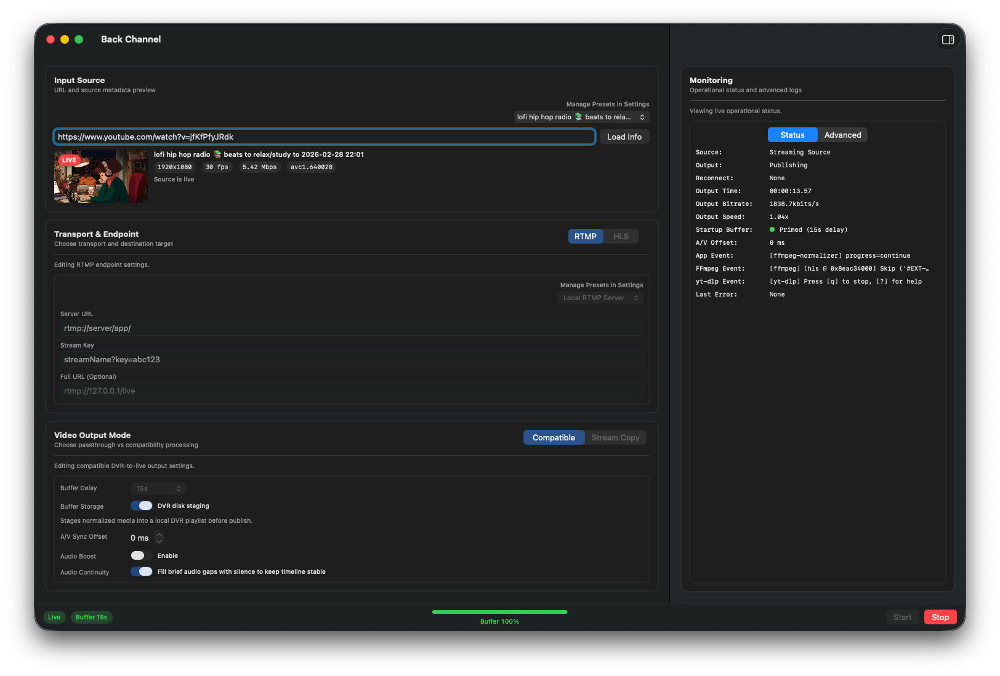

macOS Livestream Bridge
Bridge Livestreams to RTMP & HLS
Back Channel turns live web streams into RTMP sources. It is designed for producers, newsroom teams, and technical creators who need to route livestream sources into RTMP or HLS workflows quickly and reliably.
App Preview
A focused pro workflow for ingest, transport, output mode, and monitoring in one place.

Key Features
- Converts livestreams (including YouTube Live, Twitch, TikTok, and more) into RTMP or HLS output.
- Optional command-line workflow for automation and headless operation.
- Built for rebroadcasting, monitoring, archiving, and transcription workflows.
System Requirements
- macOS 13 Ventura or later
- Apple Silicon Mac
Back Channel is very early and has not been extensively tested. Use at your own risk.
Download
Downloads are served from GitHub Releases. The button above automatically targets the latest
Back-Channel-<version>.zip asset.